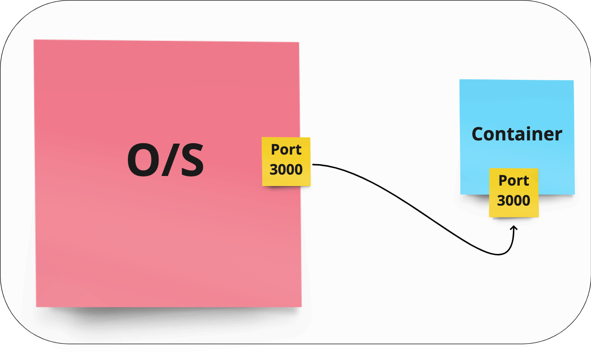

Lets look at our Dockerfile
Go to the Dockerfile inside the app directory
Lets look at our current images
docker image ls
Can see our image is not there so we need to build it first:
docker build -t techtonic .
-
-t tags the image for future reference / human readability.
-
. means search for the Dockerfile in the current directory
Lets run it
docker run -dp 3000:3000 techtonic
- d means detached mode so we can still use the terminal
- p is port as we need to map between the port (internal to the container) to port on our machine. Without it you won't be able to access the app.
Ports?

Lets look at the status of the new container:
docker ps
Logs
We can see the logs of an app like so:
docker ps # Look under NAMES to get container name
docker logs ${containerName}